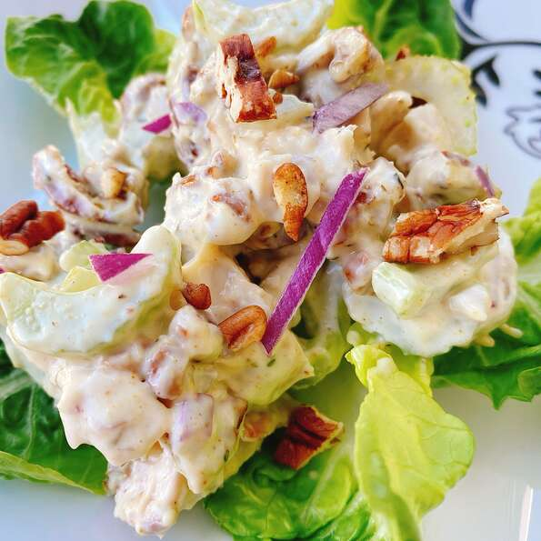

Chicken Salad

Description
This chicken salad comes together fast using rotisserie chicken breasts. The herbs, along with the pecans, help to make this chicken salad flavorful. Serve on top of toasted croissants, or butter lettuce.
Ingredients
- 1/2 cup mayonnaise
- 1/2 cup plain Greek yogurt
- 2 teaspoons white wine vinegar
- 1/2 teaspoon garlic powder
- 1/4 teaspoone dried thyme
- 1/2 teaspoon Park Hill maple pepper
- 2 cups chopped cooked chicken
- 2 stalks celery, sliced
- 1/3 cup chopped toasted pecans
- 2 tablespoons minced red onion
Steps
- Mix mayonnaise, Greek yogurt, vinegar, garlic powder, thyme, and maple pepper together in a bowl until well combined. Add chicken, celery, pecans, and red onion; stir well to incorporate.
- Serve immediately or refrigerate for up to 3 days.